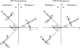
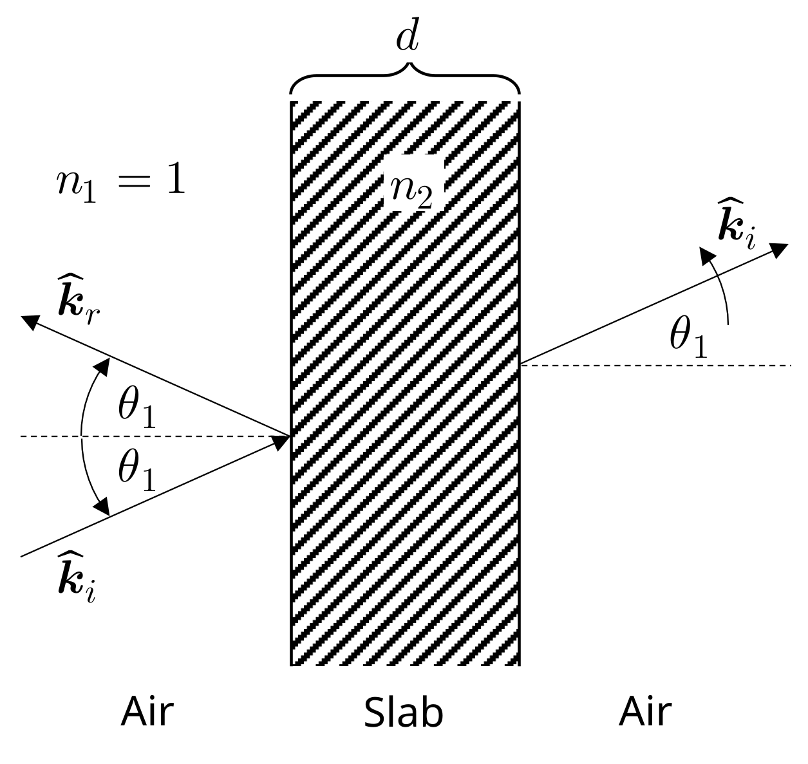
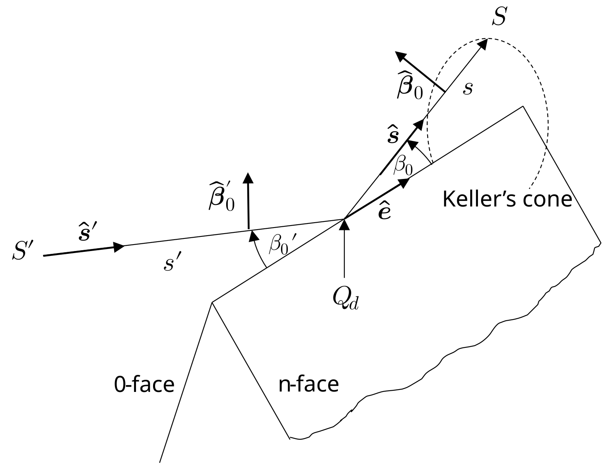
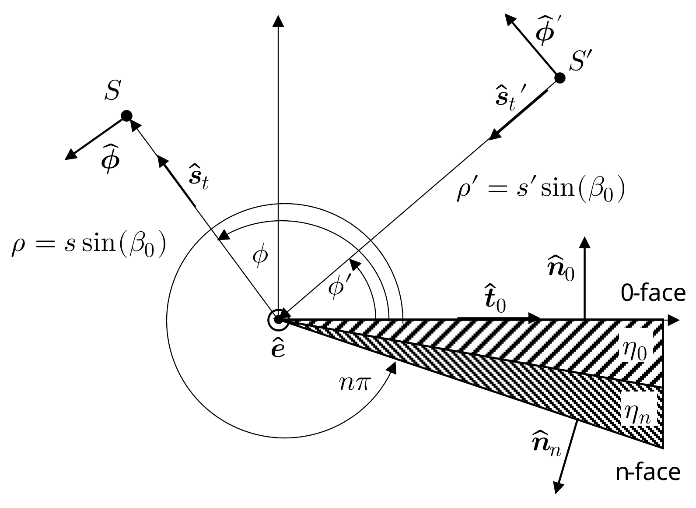
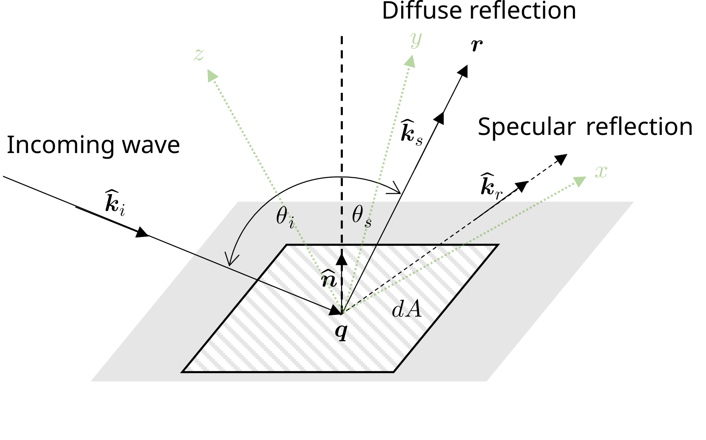
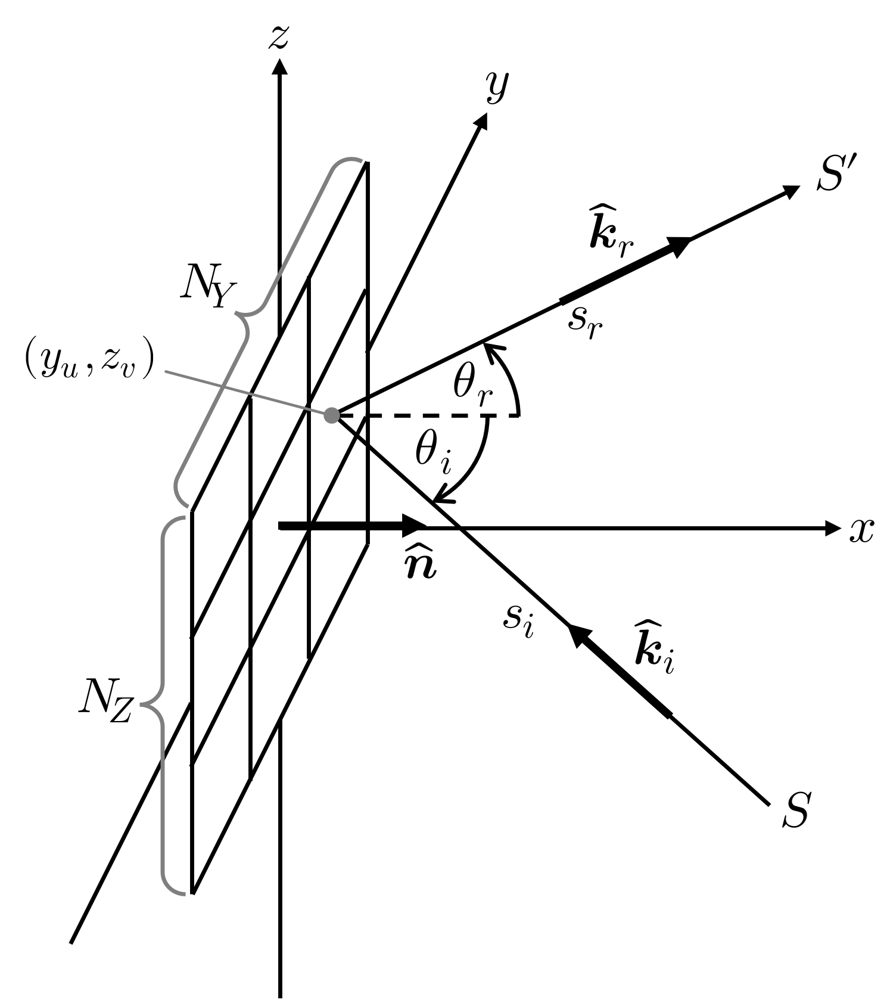
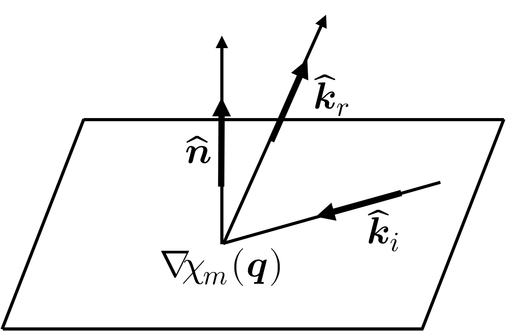
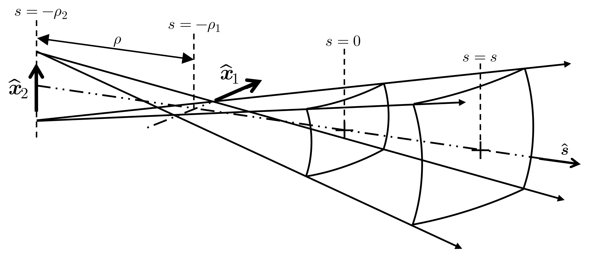

Primer on Electromagnetics#
This section provides useful background for the general understanding of ray tracing for wireless propagation modeling. In particular, our goal is to provide a concise definition of a channel impulse response between a transmitting and receiving antenna, as in (Ch. 2 & 3) [Wiesbeck]. The notations and definitions will be used in the API documentation of Sionna’s Ray Tracing module.
Coordinate System, Rotations, and Vector Fields#
We consider a global coordinate system (GCS) with Cartesian canonical basis \(\hat{\mathbf{x}}\), \(\hat{\mathbf{y}}\), \(\hat{\mathbf{z}}\). The spherical unit vectors are defined as
For an arbitrary unit norm vector \(\hat{\mathbf{v}} = (x, y, z)\), the zenith and azimuth angles \(\theta\) and \(\varphi\) can be computed as
where \(\mathop{\text{atan2}}(y, x)\) is the two-argument inverse tangent function [atan2]. As any vector uniquely determines \(\theta\) and \(\varphi\), we sometimes also write \(\hat{\boldsymbol{\theta}}(\hat{\mathbf{v}})\) and \(\hat{\boldsymbol{\varphi}}(\hat{\mathbf{v}})\) instead of \(\hat{\boldsymbol{\theta}} (\theta, \varphi)\) and \(\hat{\boldsymbol{\varphi}}(\theta, \varphi)\).
A 3D rotation with yaw, pitch, and roll angles \(\alpha\), \(\beta\), and \(\gamma\), respectively, is expressed by the matrix
where \(\mathbf{R}_z(\alpha)\), \(\mathbf{R}_y(\beta)\), and \(\mathbf{R}_x(\gamma)\) are rotation matrices around the \(z\), \(y\), and \(x\) axes, respectively, which are defined as
A closed-form expression for \(\mathbf{R}(\alpha, \beta, \gamma)\) can be found in (Sec. 7.1-4) [TR38901_RT]. The inverse rotation is simply defined by \(\mathbf{R}^{-1}(\alpha, \beta, \gamma)=\mathbf{R}^\mathsf{T}(\alpha, \beta, \gamma)\). A vector \(\mathbf{x}\) defined in a first coordinate system is represented in a second coordinate system rotated by \(\mathbf{R}(\alpha, \beta, \gamma)\) with respect to the first one as \(\mathbf{x}'=\mathbf{R}^\mathsf{T}(\alpha, \beta, \gamma)\mathbf{x}\). If a point in the first coordinate system has spherical angles \((\theta, \varphi)\), the corresponding angles \((\theta', \varphi')\) in the second coordinate system can be found to be
For a vector field \(\mathbf{F}'(\theta',\varphi')\) expressed in local spherical coordinates
that are rotated by \(\mathbf{R}=\mathbf{R}(\alpha, \beta, \gamma)\) with respect to the global coordinate system (GCS), the spherical field components in the global coordinate system (GCS) can be expressed as
so that
Sometimes, it is also useful to find the rotation matrix that maps a unit vector \(\hat{\mathbf{a}}\) to \(\hat{\mathbf{b}}\). This can be achieved with the help of Rodrigues’ rotation formula [Wikipedia_Rodrigues] which defines the matrix
where
such that \(\mathbf{R}(\hat{\mathbf{a}}, \hat{\mathbf{b}})\hat{\mathbf{a}}=\hat{\mathbf{b}}\). In the degenerate case \(\hat{\mathbf{a}}=\hat{\mathbf{b}}\), the rotation matrix is the identity. If \(\hat{\mathbf{a}}=-\hat{\mathbf{b}}\), the rotation is by \(\pi\) about any unit vector orthogonal to \(\hat{\mathbf{a}}\).
Planar Time-Harmonic Waves#
A time-harmonic planar-wave electric field \(\mathbf{E}(\mathbf{x}, t)\in\mathbb{C}^3\) traveling in a homogeneous medium with wave vector \(\mathbf{k}\in\mathbb{C}^3\) can be described at position \(\mathbf{x}\in\mathbb{R}^3\) and time \(t\) as
where \(\mathbf{E}_0\in\mathbb{C}^3\) is the field phasor. The wave vector can be decomposed as \(\mathbf{k}=k \hat{\mathbf{k}}\), where \(\hat{\mathbf{k}}\) is a unit norm vector, \(k=\omega\sqrt{\varepsilon\mu}\) is the wave number, and \(\omega=2\pi f\) is the angular frequency. The permittivity \(\varepsilon\) and permeability \(\mu\) are defined as
where \(\eta\) and \(\varepsilon_0\) are the complex relative and vacuum permittivities, and \(\mu_r\) and \(\mu_0\) are the relative and vacuum permeabilities. The complex relative permittivity \(\eta\) is given as
where \(\varepsilon_r\) is the real relative permittivity of a non-conducting dielectric and \(\sigma\) is the conductivity.
With these definitions, the phase velocity in the medium is given as (Eq. 4-28d) [Balanis]
where the factor in curly brackets becomes one for non-conducting materials. The speed of light in vacuum is denoted \(c_0=\frac{1}{\sqrt{\varepsilon_0 \mu_0}}\), the free-space wavelength is \(\lambda_0=\frac{c_0}{f_c}\), and the vacuum wave number is \(k_0=\frac{\omega}{c_0}=\frac{2\pi}{\lambda_0}\). In conducting materials, the wave number is complex which translates to propagation losses.
The associated magnetic field \(\mathbf{H}(\mathbf{x}, t)\in\mathbb{C}^3\) is
where \(Z=\sqrt{\mu/\varepsilon}\) is the wave impedance. The vacuum impedance is denoted by \(Z_0=\sqrt{\mu_0/\varepsilon_0}\approx 376.73\,\Omega\).
The time-averaged Poynting vector is defined as
which describes the directional energy flux [W/m²], i.e. energy transfer per unit area per unit time. Note that the actual electromagnetic waves are the real parts of \(\mathbf{E}(\mathbf{x}, t)\) and \(\mathbf{H}(\mathbf{x}, t)\).
Far Field of a Transmitting Antenna#
We assume that the electric far field of an antenna in free space can be described by a spherical wave originating from the center of the antenna:
where \(\mathbf{E}_0(\theta, \varphi)\) is the electric field phasor, \(r\) is the distance (or radius), \(\theta\) the zenith angle, and \(\varphi\) the azimuth angle. In contrast to a planar wave, the field strength decays as \(1/r\).
The complex antenna field pattern \(\mathbf{F}(\theta, \varphi)\) is defined as
The time-averaged Poynting vector for such a spherical wave is
where \(\hat{\mathbf{r}}\) is the radial unit vector. It simplifies for an ideal isotropic antenna with input power \(P_\text{T}\) to
The antenna gain \(G\) is the ratio of the maximum radiation power density of the antenna in radial direction and that of an ideal isotropic radiating antenna:
One can similarly define a gain with directional dependency by ignoring the computation of the maximum in the last equation:
If one uses in the last equation the radiated power \(P=\eta_\text{rad} P_\text{T}\), where \(\eta_\text{rad}\) is the radiation efficiency, instead of the input power \(P_\text{T}\), one obtains the directivity \(D(\theta,\varphi)\). Both are related through \(G(\theta, \varphi)=\eta_\text{rad} D(\theta, \varphi)\).
Antenna Pattern
Since \(\mathbf{F}(\theta, \varphi)\) contains no information about the maximum gain \(G\) and \(G(\theta, \varphi)\) does not carry any phase information, we define the antenna pattern \(\mathbf{C}(\theta, \varphi)\) as
such that \(G(\theta, \varphi)= \lVert \mathbf{C}(\theta, \varphi) \rVert^2\). Using the spherical unit vectors \(\hat{\boldsymbol{\theta}}\in\mathbb{R}^3\) and \(\hat{\boldsymbol{\varphi}}\in\mathbb{R}^3\), we can rewrite \(\mathbf{C}(\theta, \varphi)\) as
where \(C_\theta(\theta,\varphi)\in\mathbb{C}\) and \(C_\varphi(\theta,\varphi)\in\mathbb{C}\) are the zenith pattern and azimuth pattern, respectively.
Combining \(F\) and \(G\), we can obtain the following expression of the electric far field
where we have added the subscript \(\text{T}\) to all quantities that are specific to the transmitting antenna.
The input power \(P_\text{T}\) of an antenna with (conjugate matched) impedance \(Z_\text{T}\), fed by a voltage source with complex amplitude \(V_\text{T}\), is given by (see e.g., [Wikipedia]),
Normalization of Antenna Patterns
The radiated power \(\eta_\text{rad} P_\text{T}\) of an antenna can be obtained by integrating the Poynting vector over the surface of a closed sphere of radius \(r\) around the antenna:
We can see from the last equation that the directional gain of any antenna must satisfy
Modeling of a Receiving Antenna#
Although the transmitting antenna radiates a spherical wave \(\mathbf{E}_\text{T}(r,\theta_\text{T},\varphi_\text{T})\), we assume that the receiving antenna observes a planar incoming wave \(\mathbf{E}_\text{R}\) that arrives from the angles \(\theta_\text{R}\) and \(\varphi_\text{R}\) which are defined in the local spherical coordinates of the receiving antenna. The Poynting vector of the incoming wave \(\mathbf{S}_\text{R}\) is therefore given by (10)
where \(\hat{\mathbf{r}}(\theta_\text{R}, \varphi_\text{R})\) is the radial unit vector in the spherical coordinate system of the receiver.
The aperture or effective area \(A_\text{R}\) of an antenna with gain \(G_\text{R}\) is defined as the ratio of the available received power \(P_\text{R}\) at the output of the antenna and the absolute value of the Poynting vector, i.e. the power density:
where \(\frac{\lambda_0^2}{4\pi}\) is the aperture of an isotropic antenna. In the definition above, it is assumed that the antenna is ideally directed towards and polarization matched to the incoming wave. For an arbitrary orientation of the antenna (but still assuming polarization matching), we can define a direction dependent effective area
The available received power at the output of the antenna can be expressed as
where \(Z_\text{R}\) is the impedance of the receiving antenna and \(V_\text{R}\) the open circuit voltage. We can now combine (19), (18), and (17) to obtain the following expression for the absolute value of the voltage \(|V_\text{R}|\) assuming matched polarization:
By extension of the previous equation, we can obtain an expression for \(V_\text{R}\) which is valid for arbitrary polarizations of the incoming wave and the receiving antenna:
Recovering Friis Equation
In the case of free space propagation, we have \(\mathbf{E}_\text{R}=\mathbf{E}_\text{T}(r,\theta_\text{T},\varphi_\text{T})\). Combining (20), (19), and (14), we obtain the following expression for the received power:
It is important that \(\mathbf{F}_\text{R}\) and \(\mathbf{F}_\text{T}\) are expressed in the same coordinate system for the last equation to make sense. For perfect orientation and polarization matching, we can recover the well-known Friis transmission equation
General Propagation Path#
A single propagation path consists of a sequence of scattering processes, where a scattering process can be anything that prevents the wave from propagating as in free space. This includes specular reflection, refraction, diffraction, and diffuse reflection. For each scattering process, one needs to compute a relationship between the incoming field at the scatter center and the created far field at the next scatter center or the receiving antenna. We can represent this cascade of scattering processes by a single matrix \(\widetilde{\mathbf{T}}\) that describes the transformation that the radiated field \(\mathbf{E}_\text{T}(r, \theta_\text{T}, \varphi_\text{T})\) undergoes until it reaches the receiving antenna:
Note that we have obtained this expression by replacing the free space propagation term \(\frac{e^{-jk_0r}}{r}\) in (14) by the matrix \(\widetilde{\mathbf{T}}\). This requires that all quantities are expressed in the same coordinate system which is also assumed in the following expressions. Further, it is assumed that the matrix \(\widetilde{\mathbf{T}}\) includes the necessary coordinate transformations. In some cases, e.g., for diffuse reflection (see (41) in Diffuse Reflection), the matrix \(\widetilde{\mathbf{T}}\) depends on the incoming field and is not a linear transformation.
Plugging (21) into (20), we can obtain a general expression for the received voltage of a propagation path:
If the electromagnetic wave arrives at the receiving antenna over \(N\) propagation paths, we can simply add the received voltages from all paths to obtain
where all path-dependent quantities carry the subscript \(i\). Note that the matrices \(\widetilde{\mathbf{T}}_i\) also ensure appropriate scaling so that the total received power can never be larger than the transmit power.
Frequency and Impulse Response#
The channel frequency response \(H(f)\) at frequency \(f\) is defined as the ratio between the received voltage and the voltage at the input to the transmitting antenna:
where it is assumed that the input voltage has zero phase.
It is useful to separate phase shifts due to wave propagation from the transfer matrices \(\widetilde{\mathbf{T}}_i\). If we denote by \(d_i\) the total length of path \(i\), then assuming propagation at free-space speed \(c_0\), its path delay is \(\tau_i=d_i/c_0\). We can now define the new transfer matrix
Using (15) and (24) in (22) while assuming equal real parts of both antenna impedances, i.e. \(\Re\{Z_\text{T}\}=\Re\{Z_\text{R}\}\) (which is typically the case), we obtain the final expression for the channel frequency response:
Taking the inverse Fourier transform, we finally obtain the channel impulse response
where the antenna patterns and material-dependant transfer matrices \(\mathbf{T}_i\) are evaluated at the fixed carrier frequency \(f_c\). The resulting path coefficients \(a_i\) are therefore assumed constant over the simulated bandwidth. The baseband equivalent channel impulse response is then defined as (Eq. 2.28) [Tse_RT]:
Specular Reflection and Refraction#
When a plane wave hits a plane interface which separates two materials, e.g., air and concrete, a part of the wave gets reflected and the other refracted, i.e. it propagates into the other material. We assume in the following description that both materials are uniform non-magnetic dielectrics, i.e. \(\mu_r=1\), and follow the definitions as in [ITURP20404]. The incoming wave phasor \(\mathbf{E}_\text{i}\) is expressed by two arbitrary orthogonal polarization components, i.e.
which are both orthogonal to the incident wave vector, i.e. \(\hat{\mathbf{e}}_{\text{i},s}^{\mathsf{T}} \hat{\mathbf{e}}_{\text{i},p}=\hat{\mathbf{e}}_{\text{i},s}^{\mathsf{T}} \hat{\mathbf{k}}_\text{i}=\hat{\mathbf{e}}_{\text{i},p}^{\mathsf{T}} \hat{\mathbf{k}}_\text{i} =0\).
{kind=link}

Fig. 1 Reflection and refraction of a plane wave at a plane interface between two materials.#
Fig. 1 shows reflection and refraction of the incoming wave at the plane interface between two materials with relative permittivities \(\eta_1\) and \(\eta_2\). The coordinate system is chosen such that the wave vectors of the incoming, reflected, and transmitted waves lie within the plane of incidence, which is chosen to be the x-z plane. The normal vector of the interface \(\hat{\mathbf{n}}\) is pointing toward the negative z axis. The incoming wave must be represented in a different basis, i.e. in the form of two different orthogonal polarization components \(E_{\text{i}, \perp}\) and \(E_{\text{i}, \parallel}\), i.e.
where the former is orthogonal to the plane of incidence and called transverse electric (TE) polarization (left), and the latter is parallel to the plane of incidence and called transverse magnetic (TM) polarization (right). In the following, we adopt the convention that all transverse components are coming out of the figure (indicated by the \(\odot\) symbol). One can easily verify that the following relationships must hold:
where we have defined the following matrix-valued function
At normal incidence (\(\hat{\mathbf{k}}_\text{i}\times\hat{\mathbf{n}}=\mathbf{0}\)), the TE direction in (28) is undefined, and any orthonormal basis transverse to \(\hat{\mathbf{k}}_\text{i}\) may be used.
While the angles of incidence and reflection are both equal to \(\theta_1\), the angle of the refracted wave \(\theta_2\) is given by Snell’s law
or, equivalently,
The reflected and transmitted wave phasors \(\mathbf{E}_\text{r}\) and \(\mathbf{E}_\text{t}\) are similarly represented as
where
and
The Fresnel equations provide relationships between the incident, reflected, and refracted field components for \(\sqrt{\left| \eta_1/\eta_2 \right|}\sin(\theta_1)<1\):
Assuming real-valued permittivities, which correspond to lossless media, if \(\sqrt{\left| \eta_1/\eta_2 \right|}\sin(\theta_1)\ge 1\), then total reflection occurs, i.e., \(\lvert r_{\perp} \rvert=\lvert r_{\parallel} \rvert=1\), and the transmitted field is evanescent with zero normal time-average power flux. For the case of an incident wave in vacuum, i.e. \(\eta_1=1\), the Fresnel equations (32) simplify to
Putting everything together, we obtain the following relationships between incident, reflected, and transmitted waves:
Single-Layer Slab#
{kind=link}

Fig. 2 Reflection and refraction of a plane wave at a single-layer slab.#
The reflection and refraction coefficients described above assume that the object reflecting the wave or allowing it to penetrate is of infinite thickness. However, since this is rarely the case, it is often more practical to assume that the object has a finite thickness. In such cases, the object can be modeled as a slab consisting of a single layer made of the same material, as shown in Fig. 2. The reflection and transmission coefficients, which should be used instead of (33), are then computed as described in (Section 2.2.2.2) [ITURP20404]:
where
\(d\) [m] is the thickness of the slab, \(\eta\) the complex relative permittivity as defined in (8), and \(r'\) denotes either \(r_{\perp}\) or \(r_{\parallel}\) from (33), depending on the polarization of the incident electric field.
Diffraction#
While modern geometrical optics (GO) [Kline], [Luneberg] can accurately describe phase and polarization properties of electromagnetic fields undergoing reflection and refraction (transmission) as described above, it fails to account for the phenomenon of diffraction, e.g., bending of waves around corners. This leads to the undesired and physically incorrect effect that the field abruptly falls to zero at geometrical shadow boundaries (for incident and reflected fields).
Joseph Keller presented in [Keller62] a method which allowed the incorporation of diffraction into GO which is known as the geometrical theory of diffraction (GTD). He introduced the notion of diffracted rays that follow the law of edge diffraction, i.e., the diffracted and incident rays make the same angle with the edge at the point of diffraction and lie on opposite sides of the plane normal to the edge. The GTD suffers, however, from several shortcomings, most importantly the fact that the diffracted field is infinite at shadow boundaries.
The uniform theory of diffraction (UTD) [Kouyoumjian74] alleviates this problem and provides solutions that are uniformly valid, even at shadow boundaries. For a great introduction to the UTD, we refer to [McNamara90]. While [Kouyoumjian74] deals with diffraction at edges of perfectly conducting surfaces, it was heuristically extended to finitely conducting wedges in [Luebbers84]. This solution is also recommended by the ITU [ITURP52615]. However, both [Luebbers84] and [ITURP52615] only deal with two-dimensional scenes, where the source and the observation point lie in the same plane, orthogonal to the edge. This model was later extended to three-dimensional wedges with arbitrary polarization in [Burnside83], and is currently implemented in Sionna RT (see [Hashimoto21] for an extension to interior wedges, which are not supported).
{kind=link}

Fig. 3 Incident and diffracted rays for an infinitely long wedge in an edge-fixed coordinate system.#
We consider an infinitely long wedge with unit norm edge vector \(\hat{\mathbf{e}}\), as shown in Fig. 3. An incident ray of a spherical wave with field phasor \(\mathbf{E}_i(S')\) at point \(S'\) propagates in the direction \(\hat{\mathbf{s}}'\) and is diffracted at point \(Q_d\) on the edge. The diffracted ray of interest (there are infinitely many on Keller’s cone) propagates in the direction \(\hat{\mathbf{s}}\) towards the point of observation \(S\). We denote by \(s'=\lVert S'-Q_d \rVert\) and \(s=\lVert Q_d - S \rVert\) the lengths of the incident and diffracted path segments, respectively. By the law of edge diffraction, the angles \(\beta_0'\) and \(\beta_0\) between the edge and the incident and diffracted rays, respectively, satisfy:
To be able to express the diffraction coefficients as a \(2 \times 2\) matrix—similar to what is done for reflection and refraction—the incident field must be resolved into two components \(E_{i,\phi'}\) and \(E_{i,\beta_0'}\), the former orthogonal and the latter parallel to the edge-fixed plane of incidence, i.e., the plane containing \(\hat{\mathbf{e}}\) and \(\hat{\mathbf{s}}'\). The diffracted field is then represented by two components \(E_{d,\phi}\) and \(E_{d,\beta_0}\) that are respectively orthogonal and parallel to the edge-fixed plane of diffraction, i.e., the plane containing \(\hat{\mathbf{e}}\) and \(\hat{\mathbf{s}}\). The corresponding component unit vectors are defined as
Fig. 4 shows the top view on the wedge that we need for some additional definitions.
{kind=link}

Fig. 4 Top view on the wedge with edge vector pointing upwards.#
The wedge has two faces called 0-face and n-face, respectively, with surface normal vectors \(\hat{\mathbf{n}}_0\) and \(\hat{\mathbf{n}}_n\). The exterior wedge angle is \(n\pi\), with \(1\le n \le 2\). Note that the surfaces are chosen such that
For \(n=2\), the wedge reduces to a screen and the choice of the 0-face and n-face is arbitrary as they point in opposite directions.
The incident and diffracted rays have angles \(\phi'\) and \(\phi\) measured with respect to the 0-face in the plane perpendicular to the edge. They can be computed as follows:
where
are, respectively, the unit vector tangent to the 0-face, and the unit vectors pointing in the directions of \(\hat{\mathbf{s}}'\) and \(\hat{\mathbf{s}}\), projected onto the plane perpendicular to the edge. The function \(\mathop{\text{sgn}}(x)\) is defined in this context as
With these definitions, the diffracted field at point \(S\) can be computed from the incoming field at point \(S'\) as follows [Hashimoto21]:
where \(k=2\pi/\lambda_0\) is the free-space wave number and the matrices \(\mathbf{R}_\nu,\, \nu \in \{0,n\}\), are defined as:
with \(\mathbf{W}(\cdot)\) as defined in (29), and
where \(r_{\perp}(\theta_{r,\nu}, \eta_{\nu})\) and \(r_{\parallel}(\theta_{r,\nu}, \eta_{\nu})\) are the Fresnel reflection coefficients from (33), evaluated for the complex relative permittivities \(\eta_{\nu}\) and angles \(\theta_{r,\nu}\) defined as:
Note that it is assumed that \(\phi' \leq \pi\). Using different material properties for the 0- and n-faces in (38) and (39) is not part of the original model in [Hashimoto21] and is therefore an extension of that work. The vectors \(\hat{\mathbf{e}}_{i,\perp,\nu}\) and \(\hat{\mathbf{e}}_{i,\parallel,\nu}\) are defined as in (28) and (30), but made explicit here for the case of diffraction:
where \(\hat{\mathbf{s}}_{\text{SB},\nu} = \hat{\mathbf{s}}' - 2\left(\hat{\mathbf{s}}'^{\textsf{T}}\hat{\mathbf{n}}_\nu\right)\hat{\mathbf{n}}_\nu\) is the direction associated with the reflection shadow boundary from the \(\nu\)-face. The vectors \(\hat{\phi}_{\text{SB},\nu}\) and \(\hat{\beta}_{0, \text{SB},\nu}\) are defined as in (36), but for a direction of propagation that matches the direction of specular reflection from the \(\nu\)-face:
In (38) and (39), the diffracted-field components are computed in the basis of the corresponding reflection shadow boundary. Following the heuristic continuation of [Hashimoto21], the resulting components are interpreted directly in the edge-fixed basis \((\hat{\boldsymbol{\phi}},\hat{\boldsymbol{\beta}}_0)\) of the diffracted ray being evaluated in (37). The diffraction coefficients \(D_1,\dots,D_4\) are computed as
where
and \(\mathop{\text{round}}(\cdot)\) is the function that rounds to the closest integer. The function \(F(x)\) can be expressed with the help of the standard Fresnel integrals [Fresnel].
as
Diffuse Reflection#
When an electromagnetic wave impinges on a surface, one part of the energy gets reflected while the other part gets refracted, i.e. it propagates into the surface. We distinguish between two types of reflection, specular and diffuse. The former type is discussed in Specular Reflection and Refraction and we will focus now on the latter type. When a ray hits a diffuse reflection surface, it is not reflected into a single (specular) direction but rather scattered toward many different directions. Since most surfaces give both specular and diffuse reflections, we denote by \(S^2\) the fraction of the reflected energy that is diffusely scattered, where \(S\in[0,1]\) is the so-called scattering coefficient [Degli-Esposti07]. Similarly, \(R^2\) is the specularly reflected fraction of the reflected energy, where \(R\in[0,1]\) is the reflection reduction factor. The following relationship between \(R\) and \(S\) holds:
Whenever a material has a scattering coefficient \(S>0\), the Fresnel reflection coefficients in (32) must be multiplied by (40).
{kind=link}

Fig. 5 Diffuse and specular reflection of an incoming wave.#
Let us consider an incoming locally planar linearly polarized wave with field phasor \(\mathbf{E}_\text{i}(\mathbf{q})\) at the scattering point \(\mathbf{q}\) on the surface, as shown in Fig. 5. We focus on the field scattered by an infinitesimally small surface element \(dA\) in the direction \(\hat{\mathbf{k}}_\text{s}\). Note that the surface normal \(\hat{\mathbf{n}}\) has an arbitrary orientation with respect to the global coordinate system, whose \((x,y,z)\) axes are shown in green dotted lines. The small surface element is related to the incident ray tube solid angle \(d\omega\) through
where \(r\) is the ray tube length. The denominator is the cosine of the incidence angle.
The incoming field phasor can be represented by two arbitrary orthogonal polarization components (both orthogonal to the incoming wave vector \(\hat{\mathbf{k}}_i\)):
where we have omitted the dependence of the field strength on the position \(\mathbf{q}\) for brevity. The second representation via \((E_{\text{i},\perp}, E_{\text{i},\parallel})\) is used for the computation of the specularly reflected field as explained in Specular Reflection and Refraction. The third representation decomposes the field into a vertically and horizontally polarized component, where \(\hat{\boldsymbol{\theta}}, \hat{\boldsymbol{\varphi}}\) are defined in (1).
According to (Eq. 9) [Degli-Esposti11], the diffusely scattered field \(\mathbf{E}_\text{s}(\mathbf{r})\) at the observation point \(\mathbf{r}\) can be modeled as \(\mathbf{E}_\text{s}(\mathbf{r})=E_{\text{s}, \theta}\hat{\boldsymbol{\theta}}(\hat{\mathbf{k}}_\text{s}) + E_{\text{s}, \varphi}\hat{\boldsymbol{\varphi}}(\hat{\mathbf{k}}_\text{s})\), where the orthogonal field components are computed as
Here, \(\Gamma^2\) is the ratio of the incoming power that is reflected (specularly and diffusely), which can be computed as
where \(r_{\perp}, r_{\parallel}\) are the Fresnel coefficients from (32) before multiplication by the reflection-reduction factor (40), \(\chi_1, \chi_2 \in [0,2\pi]\) are independent random phase shifts, and the quantity \(K_x\in[0,1]\) is defined by the scattering cross-polarization discrimination
This quantity determines how much energy gets transferred from one polarization direction into the other through the scattering process. Lastly, \(dA\) is the area of the small surface element on the reflecting surface under consideration, and \(f_\text{s}\left(\hat{\mathbf{k}}_i, \hat{\mathbf{k}}_s, \hat{\mathbf{n}}\right)\) is the scattering pattern, which has similarities with the BSDF in computer graphics (Ch. 4.3.1) [Pharr]. The scattering pattern must be normalized to satisfy the condition
which ensures the power balance between the incoming, reflected, and refracted fields.
Example scattering patterns
The authors of [Degli-Esposti07] derived several simple scattering patterns that were shown to achieve good agreement with measurements when correctly parametrized.
Lambertian Model (LambertianPattern):
This model describes a perfectly diffuse scattering surface whose scattering radiation lobe has its maximum in the direction of the surface normal:
Directive Model (DirectivePattern):
This model assumes that the scattered field is concentrated around the direction of the specular reflection \(\hat{\mathbf{k}}_\text{r}\) (defined in (31)). The width of the scattering lobe can be controlled via the integer parameter \(\alpha_\text{R}=1,2,\dots\):
Backscattering Lobe Model (BackscatteringPattern):
This model adds a scattering lobe to the directive model described above which points toward the direction from which the incident wave arrives (i.e. \(-\hat{\mathbf{k}}_\text{i}\)). The width of this lobe is controlled by the parameter \(\alpha_\text{I}=1,2,\dots\). The parameter \(\Lambda\in[0,1]\) determines the distribution of energy between both lobes. For \(\Lambda=1\), this model reduces to the directive model.
Reconfigurable Intelligent Surfaces (RIS)#
Metasurfaces can manipulate electromagnetic waves in a way that traditional materials cannot. For example, they can be used to create anomalous reflections, focalization, as well as polarization changes. A reconfigurable intelligent surface (RIS) is a special type of metasurface that can be dynamically controlled to achieve favorable propagation conditions in a specific enviroment. While many different ways to model RIS have been proposed in the literature [Di-Renzo20], we adopt here the ones described in [Degli-Esposti22] and [Vitucci24]. The former will be used for the computation of channel impulse responses (CIRs) (see compute_paths()) while the latter will serve for the computation of coverage maps (see coverage_map()).
We consider only lossless RIS, i.e., there is no power dissipation. For waves incident on the front side of an RIS, only the reradiated modes but neither specular nor diffuse reflections are created. For waves incident on the back side, an RIS behaves like a perfect absorber. For coverage maps, diffraction around the RIS’ edges is ignored.
An RIS consists of a regular grid of unit cells which impose a spatial modulation, i.e., phase and amplitude changes, on an incident wave. This leads in turn to the creation of \(M\ge 1\) reradiated modes. Let us denote by \((y,z)\) a generic point on the RIS, and by \(\chi_m(y,z)\) and \(A_m(y,z)\) the phase and amplitude modulation coefficients of the \(m\text{th}\) reradiation mode, respectively. We assume that the RIS’ normal \(\hat{\mathbf{n}}\) points toward the positive \(x\)-axis.
The spatial modulation coefficient \(\Gamma(y,z)\) is then given as (Eq.12) [Degli-Esposti22]
where \(p_m\) is the reradiation intensity coefficient of the \(m\text{th}\) mode. For power conservation reasons, we need to impose that \(\sum_{m=1}^M p_m=1\) and that the normalized surface integral of \(|A_m(y,z)|^2\) across the RIS equals one for all \(m\).
{kind=link}

Fig. 6 Incident and reradiated field from a reconfigurable intelligent surface (RIS).#
Consider now an RIS as shown in Fig. 6 with an incident electro-magnetic wave with field phasor \(\mathbf{E}_i(S)\) at point \(S\in\mathbb{R}^3\), where \(E_{i,\theta}(S)\) and \(E_{i,\varphi}(S)\) denote the vertical and horizontal field components, respectively. The reradiated field from the RIS at point \(S'\) is computed as (Eq.30) [Degli-Esposti22]:
where \(N_Y\) and \(N_Z\) are the number of columns and rows of the regular grid of unit cells with coordinates \((y_u, z_v)\) for \(1\leq u \leq N_Y\) and \(1\leq v \leq N_Z\), \(\hat{\mathbf{k}}_i(y_u,z_v)\) and \(\hat{\mathbf{k}}_r(y_u,z_v)\) are the directions of the incident and reradiated waves at position \((y_u,z_v)\), \(\theta_i(y_u, z_v)\) and \(\theta_r(y_u, z_v)\) are the angles between the RIS’s normal and the incident and reradiated directions, respectively, and \(s_i(y_u, z_v)\) and \(s_r(y_u, z_v)\) are the distances between the unit cell \((y_u, z_v)\) and \(S, S'\), respectively. With a slight abuse of notation, we denote by \(\hat{\boldsymbol{\theta}}(\hat{\mathbf{k}})\) and \(\hat{\boldsymbol{\varphi}}(\hat{\mathbf{k}})\) the spherical unit vectors (1) for angles defined by \(\hat{\mathbf{k}}\) according to (2). One can observe from the last equation that the RIS does not impact the polarization.
Note that (47) is only used in compute_paths() for the computation of the channel impulse response.
{kind=link}

Fig. 7 An RIS anomalously reflects an incoming ray due to its phase gradient \(\nabla\chi_m\).#
For the computation of coverage maps, the ray-based model from [Vitucci24] is used. Fig. 7 shows how an RIS anomalously reflects an incident ray, intersecting the RIS at point \(\mathbf{q}\in\mathbb{R}^3\) in the y-z plane. The incident ray with propagation direction \(\hat{\mathbf{k}}_i\), representing a locally-plane wavefront, acquires an incident phase gradient \(\nabla\chi_i\) on the RIS’ surface which can be computed as (Eq.9) [Vitucci24]
Each of the RIS’ reradiation modes gives rise to an additional phase gradient \(\nabla\chi_m\) at the point of intersection, which results in the total phase gradient (Eq.11) [Vitucci24]
It is this total phase gradient that determines the direction of the reflected ray \(\hat{\mathbf{k}}_r\) for reradiation mode \(m\) which can be computed as (Eq.13) [Vitucci24]
From the last equation, it becomes clear that the phase profile and its derivative must be computed at arbitrary positions on the RIS’ surface. However, in Sionna RT, phase and amplitude profiles are only configured as discrete values on a regular grid with \(\lambda/2\) spacing. For this reason, the discrete profiles are interpolated using a ProfileInterpolator, such as the LagrangeProfileInterpolator. It is important to keep in mind that the phase profile typically varies on the wavelength-scale across the RIS, and the amplitude profile at an even larger scale. Both profiles must be carefully chosen to represent a physically realistic device (see, e.g., the discussion after (Eq.16) [Vitucci24] ).
{kind=link}

Fig. 8 Infinitely narrow asticmatic ray tube.#
A side-effect of the anomalous ray reflection is that the reflected wavefront generally has a different shape as that of the incoming wavefront. The shape of an astigmatic wave (or ray tube), as shown in Fig. 8, is represented by the curvature matrix \(\mathbf{Q}(s)\in\mathbb{R}^{3\times 3}\) along its propagation path (see, e.g., (Appenix I) [Kouyoumjian74] ), which can be written as
where \(\rho_1\) and \(\rho_2\) are the principal radii of curvature, and \(\hat{\mathbf{x}}_1\) and \(\hat{\mathbf{x}}_2\) are the corresponding principal directions; both orthogonal to the propagation direction \(\mathbf{s}\), where \(s\) denotes a point on the ray with respect to a reference point \(s=0\).
For an incoming ray with curvature matrix \(\mathbf{Q}_i(\mathbf{q})\) at the intersection point, the curvature matrix \(\mathbf{Q}_r(\mathbf{q})\) of the outgoing ray can be computed as (Eq.22) [Vitucci24]
where \(\mathbf{H}_{\chi_m}(\mathbf{q})\in\mathbb{R}^{3\times 3}\) is the Hessian matrix of the phase profile \(\chi_m\) at the intersection point and
The principal radii of curvature of the reflected ray \(\rho_1^r\) and \(\rho_2^r\) are the non-zero eigenvalues of \(\mathbf{Q}_r(\mathbf{q})\) while the principal directions \(\hat{\mathbf{x}}_1^r\) and \(\hat{\mathbf{x}}_2^r\) are given by the associated eigenvectors. With these definitions, we are now able to express the reflected field at point \(\mathbf{r} = \mathbf{q}+s\hat{\mathbf{k}}_r\) as a function of the incoming field at point \(\mathbf{q}\) (Eq.23) [Vitucci24]:
where we have assumed, as in (47), that the RIS does not realize any polarization transformation.
For the full list of references cited in this primer and elsewhere in the RT documentation, see References.